Ombra
Chaque version a ses notes : ce qui a changé et comment mettre à jour.
Une seule appli Windows gratuite pour toute votre session VR : le suivi du corps entier pour les HaritoraX et les trackers compatibles SlimeVR, une chatbox VRChat avec votre musique et votre rythme cardiaque, une protection contre les crashers et des panneaux à votre poignet.
Ombra fait tourner à lui seul les HaritoraX et les trackers compatibles SlimeVR dans SteamVR, sans autre application. Il construit votre corps à partir des capteurs et de votre casque, lisse chaque tracker et corrige la dérive pendant que vous jouez.
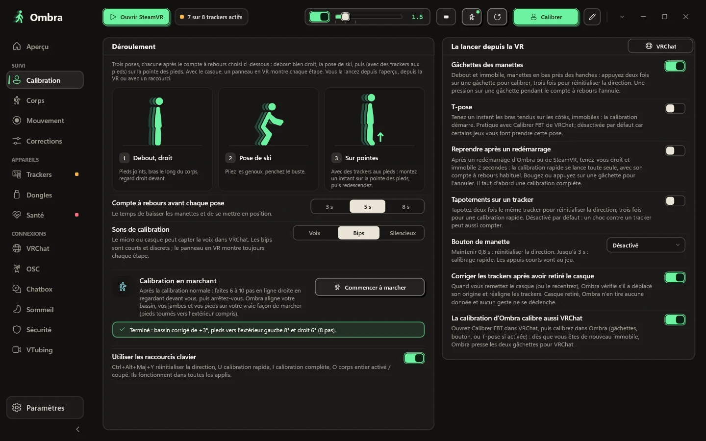
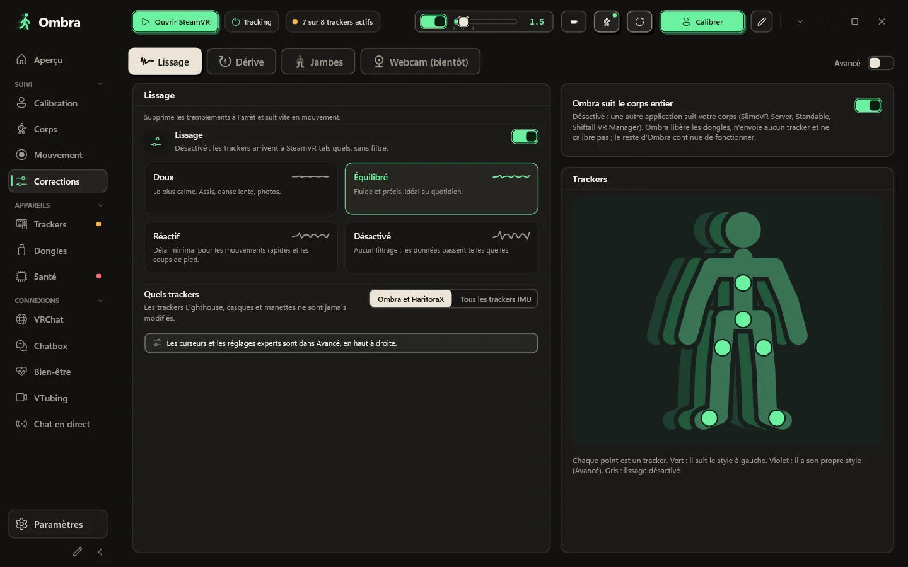
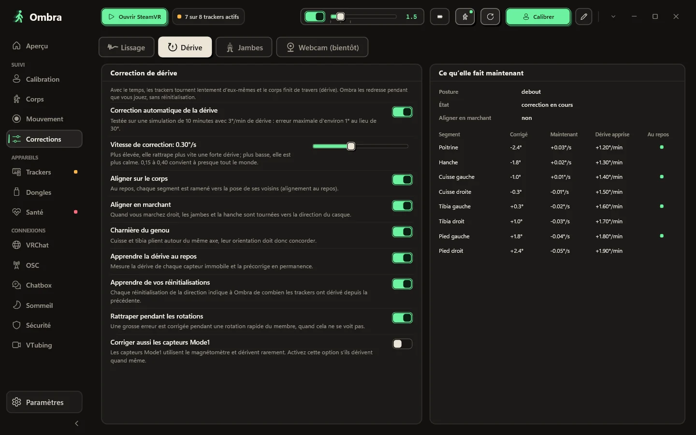
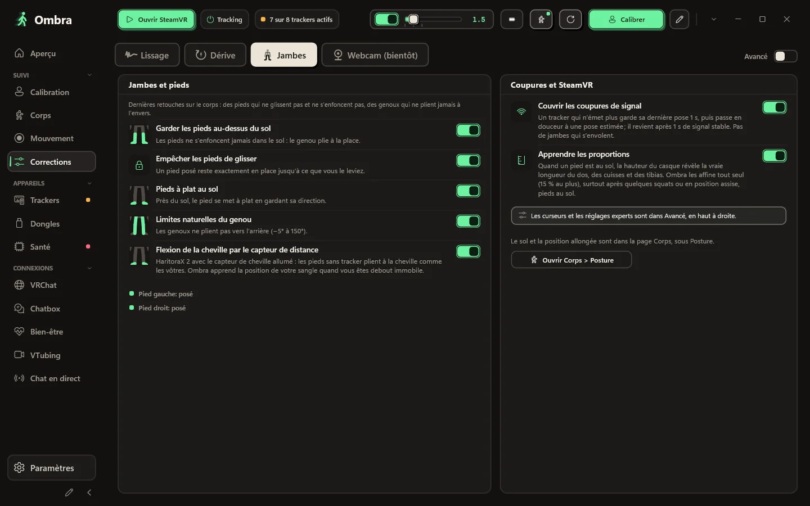
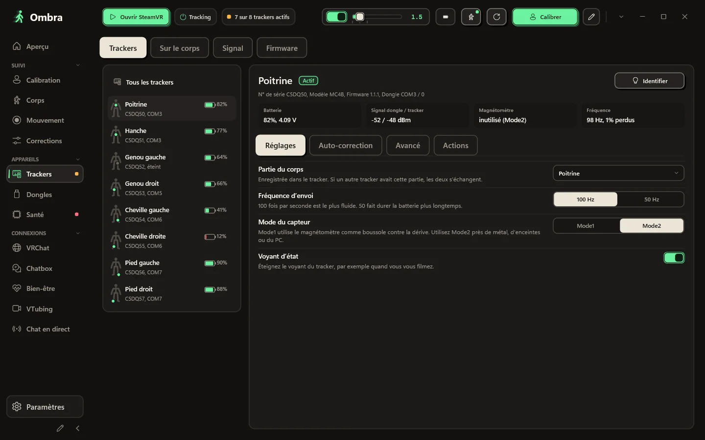
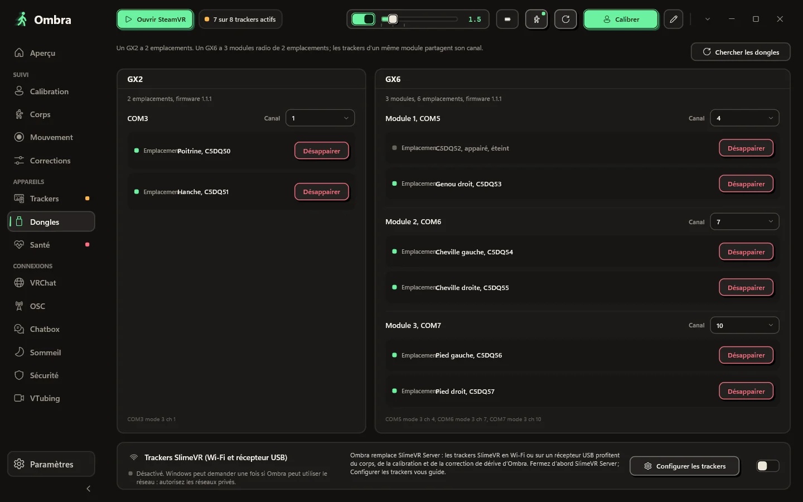
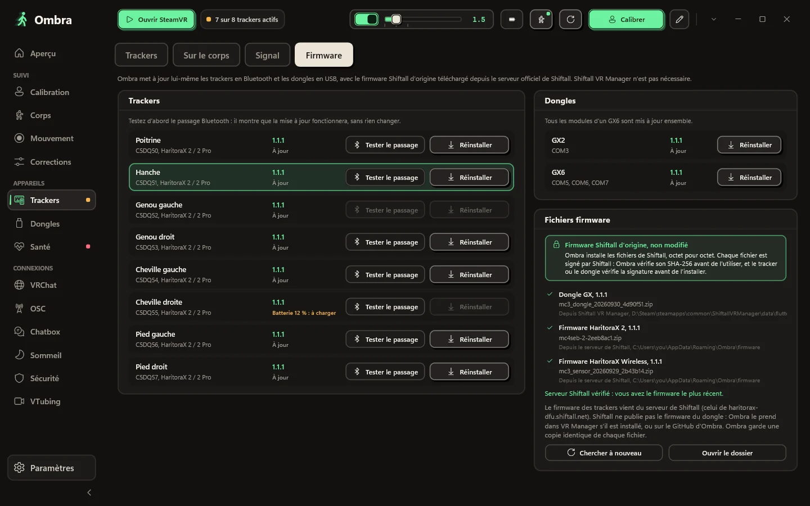
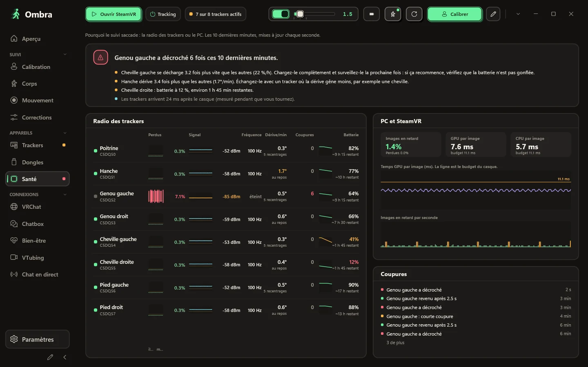
Le corps qu’Ombra construit à partir de vos capteurs et de votre casque, en vue 3D de face, de profil ou libre. Chaque tracker indique s’il est suivi, simulé ou hors signal.
Tenez-vous bien droit, prenez la pose de ski, puis montez sur la pointe des pieds avec des trackers aux pieds. Ombra indique quelle partie du corps vérifier quand quelque chose cloche.
Doux, Équilibré, Réactif ou Désactivé, ou n’importe quel niveau sur un curseur. Donnez à un seul tracker son propre style, par exemple des pieds plus calmes.
La correction de dérive agit pendant que vous jouez, et un tableau en direct montre ce qu’elle fait sur chaque partie du corps.
Votre corps reste crédible : les pieds ne traversent pas le sol, ceux qui sont posés ne glissent pas, et les genoux ne plient jamais à l’envers.
Numéro de série, firmware, emplacement sur le dongle, tension de la batterie, signal des deux côtés, état du magnétomètre et fréquence d’envoi réelle.
Un GX2 a deux emplacements ; un GX6 a trois modules radio de deux emplacements chacun. Ombra affiche chaque module, le tracker de chaque emplacement et son canal.
Mettez à jour les trackers en Bluetooth et les dongles en USB avec les fichiers de firmware d’origine de Shiftall, sans modification.
Quand le suivi saccade, la page Santé montre d’où ça vient : paquets perdus, signal et fréquence d’envoi réelle de chaque tracker, à côté des images perdues par SteamVR.
Choisissez un style, ce qu’elle montre et dans quel ordre. Ombra la garde dans la bulle et ne la sature jamais.
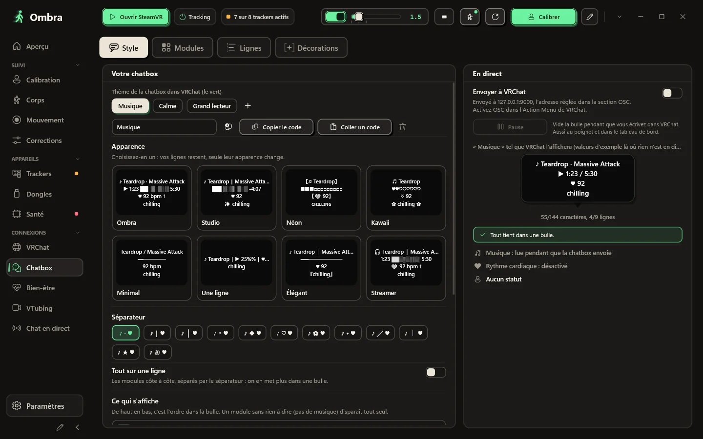
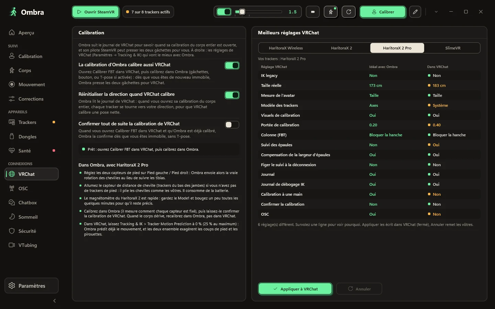
Partez d’un style : huit vraies bulles VRChat dessinées avec vos propres lignes, du sobre au kawaii. Activez ou coupez les modules, montez-les ou descendez-les, choisissez l’un des douze séparateurs que VRChat affiche vraiment, ou mettez tout sur une seule ligne.
T7RK-1J85-6, sans serveur au milieuLa calibration d’Ombra calibre aussi VRChat, et les réglages de suivi du corps entier que VRChat recommande pour vos trackers sont à un clic, et annulables.
VRChat note qui arrive et quel avatar chacun charge. Ombra lit ce journal sur votre PC : après un plantage, vous voyez le crasher probable, et son avatar n’est qu’à un clic d’être masqué.
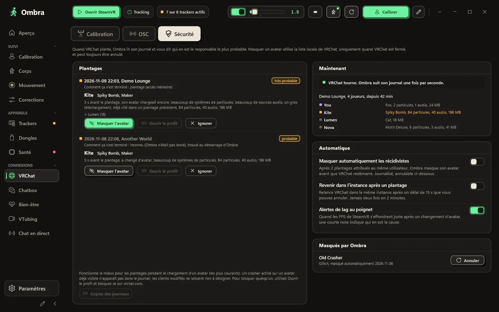
Ce dont vous avez besoin en jouant est à votre poignet et dans le tableau de bord SteamVR.
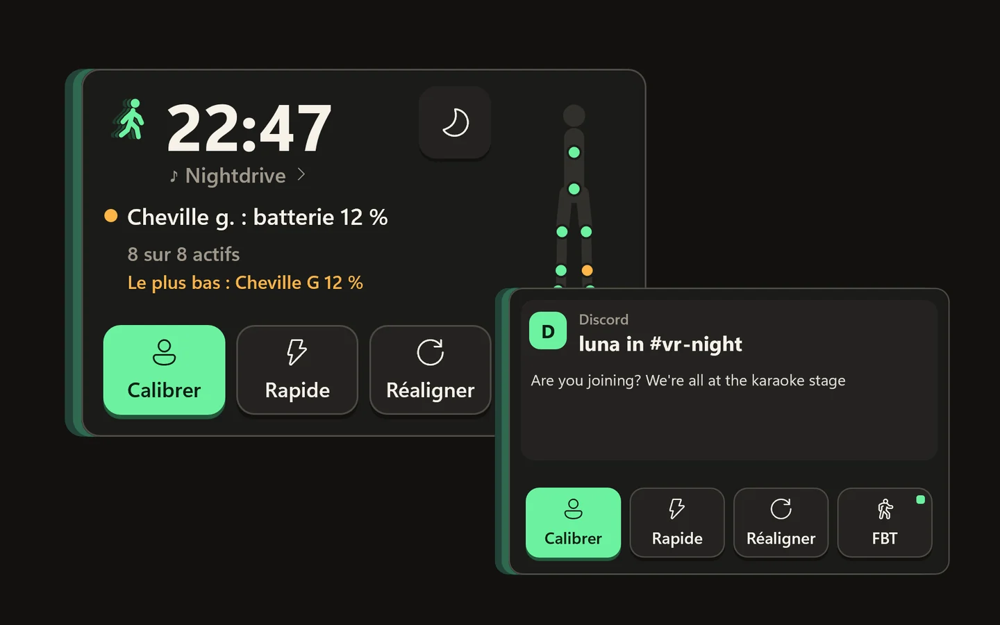
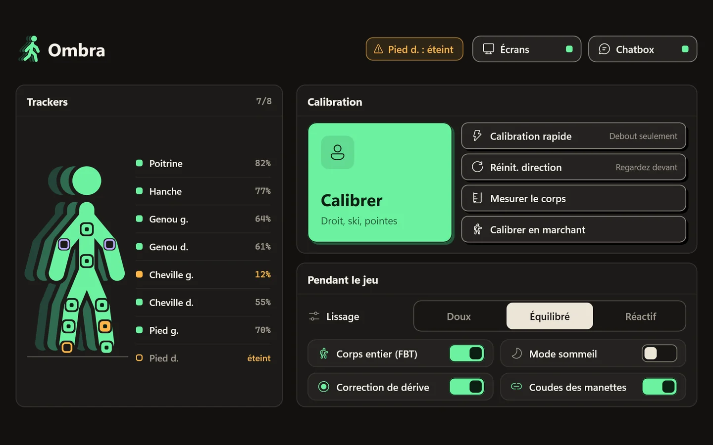
Regardez votre poignet et il apparaît : une grande horloge, le nombre de trackers actifs et la batterie la plus faible, l’état de la calibration, quatre interrupteurs nommés (corps entier, sommeil, écrans, miroir) et votre musique. Les notifications de votre PC s’y affichent aussi. Détournez le regard et il disparaît.
Chaque tracker avec sa batterie, de grands boutons pour calibrer et réinitialiser la direction, et les options que vous changez en jouant.
Organisez la barre latérale et choisissez vos propres couleurs. Un clic remet l’original.
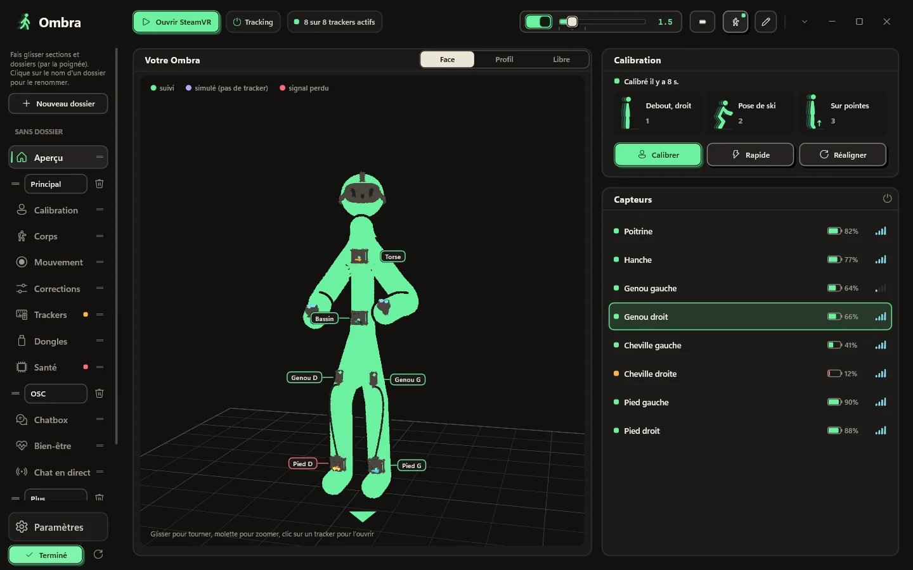
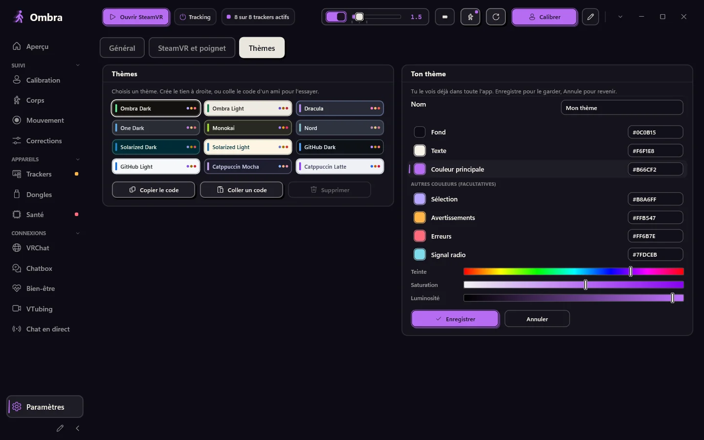
Appuyez sur le crayon en bas de la barre : créez des dossiers, nommez-les et faites glisser les sections et des dossiers entiers où vous voulez.
Paramètres → Thèmes → Ton thème : choisissez un fond, une couleur de texte et une couleur principale, avec des barres ou des codes hexadécimaux. Ombra calcule le reste. Vous le voyez en direct dans toute l’app et dans les panneaux en VR ; enregistrez-le, ou annulez pour revenir en arrière.
Aucun navigateur à l'intérieur, 12 thèmes de couleurs et le vôtre. SteamVR lance Ombra, qui attend dans la zone de notification avec un panneau pour vos trackers.
Les boutons que vous utilisez le plus, dans l’ordre que vous voulez.
Ombra vous prévient quand une nouvelle version sort et ne se met jamais à jour pendant que SteamVR tourne.
En option : après un redémarrage, Ombra se calibre tout seul dès que vous restez immobile.
Voici tout ce qu’Ombra fait avec Internet, et tout ce qu’il ne fait pas.
Ombra évolue souvent. Voici ce qu'apporte la dernière version, tiré de ses notes de version, et ce qui est sorti avant.
Ombra
Chaque version a ses notes : ce qui a changé et comment mettre à jour.
Windows 10 ou 11 (64 bits) et SteamVR. Des HaritoraX 2, 2 Pro ou Wireless avec un dongle GX, ou des trackers compatibles SlimeVR.
Un seul fichier, Ombra-Setup.exe. Le bouton ci-dessous donne toujours la dernière version.
Une seule appli à la fois peut utiliser les dongles.
Elle ne demande pas de droits d’administrateur et enregistre le pilote SteamVR. Si Windows vous avertit, consultez les questions ci-dessous.
Allumez vos trackers, lancez SteamVR, enfilez-les et appuyez sur Calibrer.
Dernière version. Toutes les versions et leurs changements
Chaque version est analysée avec Microsoft Defender et envoyée à VirusTotal : voir le rapport.
S’il manque quelque chose, demandez sur GitHub.
Non. Ombra lit les dongles lui-même, appaire les trackers et met à jour le firmware avec les fichiers d’origine de Shiftall. Gardez les autres applications de trackers fermées pendant qu’Ombra tourne.
HaritoraX 2, 2 Pro et Wireless via les dongles GX2 ou GX6, et les trackers compatibles SlimeVR en Wi-Fi ou avec un récepteur USB, par exemple Butterfly et Smol Slime. Les trackers à base station comme les Vive trackers peuvent être alignés avec un Quest, et Ombra peut aussi lisser d'autres trackers IMU déjà dans SteamVR. HaritoraX 1 (filaire) n'est pas pris en charge.
Oui. Avec un PC, via SteamVR, par câble ou sans fil. Si VRChat tourne directement sur le Quest, Ombra envoie votre corps en OSC depuis votre PC, sans SteamVR.
L’installateur n’est pas encore signé numériquement, donc SmartScreen ne le reconnaît pas. Cliquez sur Informations complémentaires, puis sur Exécuter quand même. L’installation se fait dans votre dossier utilisateur et ne demande pas de droits d’administrateur.
L’installation ajoute le pilote SteamVR d’Ombra. Vos trackers apparaissent dans SteamVR avec leurs rôles déjà définis (hanche, poitrine, genoux, pieds, coudes), et SteamVR lance Ombra pour vous.
Non. Les appareils Lighthouse, les casques et les manettes ne sont jamais modifiés. Le pilote se contente de créer les trackers virtuels d’Ombra et, uniquement si vous l’activez, de lisser d’autres trackers IMU.
Non. Beaucoup utilisent Ombra seulement pour la chatbox, les outils VRChat et le corps déduit du casque. Choisissez Aucun tracker à l’installation et Ombra ne vous demandera jamais de dongle.
Oui. Lancez Ombra.exe --demo pour avoir huit trackers de démo sur un GX2 et un GX6. La démo ne touche jamais aux ports COM, au Bluetooth, à SteamVR ni à vos réglages.
L’appli et ce site existent en anglais, italien, allemand, français, espagnol, portugais du Brésil, japonais, coréen, chinois simplifié et russe. Ombra reprend la langue de Windows, et vous pouvez la changer dans les Paramètres.
Non. Ombra est un projet indépendant, gratuit à télécharger et à utiliser. Le code source n’est pas publié ; vous pouvez proposer des fonctionnalités, des extensions et des traductions sur GitHub.
Oui. Ombra est fait par un seul développeur avec des outils d’IA, surtout Claude d’Anthropic, pour la recherche, le code, les tests et les traductions. C’est le développeur qui décide ce que fait Ombra et qui valide chaque version. Aucun générateur d’images par IA : les captures d’écran sont de vraies captures de l’application. Dans Ombra, seule la dictée vers la chatbox, facultative, utilise l’IA : le modèle Whisper tourne sur votre PC et votre voix n’en sort jamais.
Téléchargement d’Ombra-Setup.exe en cours
Quand Windows affiche « Windows a protégé votre ordinateur », cliquez sur Informations complémentaires, puis sur Exécuter quand même. L’installateur n’est pas encore signé numériquement, donc SmartScreen ne le connaît pas.
Si Ombra vous rend service, une étoile sur GitHub aide d’autres personnes à le trouver.
Mettre une étoile sur GitHub